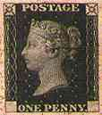

L'Organisation des Webmasters Philatéliques
Buts et motifs
L'Organisation des Webmasters Philatéliques (PWO) a été créée pour promouvoir, soutenir et développer la philatélie grâce à la publication sur le Web
De nombreuses organisations nationales et internationales regroupent les collectionneurs de timbres ou les professionnels et représentent leurs intérêts. Pour le moment, il n'existe aucune organisation regroupant la catégorie récemment apparue des collectionneurs qui combinent leur passe-temps philatélique avec une activité de publication sur le Web. Nous désignerons ces collectionneurs sous le terme de "Créateurs sur le Web" (WP)
Les WP diffèrent des journalistes philatéliques travaillant pour la presse philatélique et regroupés dans l'association des journalistes philatéliques (AIJP) . La principale différence est que les WP sont des amateurs. Ils apportent au Net ce qu'ils aiment tant : leurs timbres, les données philatéliques et leurs connaissances sur la publication sur le Web Tous ont débuté tout seuls, mus par le désir de partager avec d'autres ce qu'ils aiment et par leur intérêt d'explorer une nouvelle dimension dans la communication entre les hommes rendue possible par la (r)évolution technologique.
Pour beaucoup de WP, le forum rec.collecting.stamps.discuss était jusqu'à présent le seul endroit où ils pouvaient soit discuter de leurs problèmes soit annoncer leurs nouveaux sites. Mais ils devaient prendre en compte (et c'est toujours vrai) les intérêts de la majorité des participants qui ne sont pas concentrés sur la publication sur le Web.
Certains d'entre nous, les plus en avance et/ou les plus audacieux, ont participé à des compétitions sur le Web proposées par des organisations représentant la philatélie traditionnelle (comme la FIP, MIDAPHIL). Nous avons été souvent déçus par le manque de connaissances des jurés ou par leur manque de compréhension des spécificités de la publication sur le Web. Les critères de notation étaient inexistants ou peu clairs, les qualifications des jurés en matière de publication sur le Web étaient inconnues et les feuilles de notations promises n'arrivèrent jamais.
Dans les années passées le nombre de jeunes collectionneurs a diminué de façon continue. De nouvelles possibilités comme des jeux passionnants, les ordinateurs et l'Internet sont devenus plus attrayants que la collection de timbres. Au travers des activités de publication sur le Web dans le domaine philatélique, nous avons une nouvelle chance de regagner l'intérêt des jeunes générations pour la collection de timbres.
Pour toutes ces raisons, le temps est venu pour nous, créateurs sur le Web, de prendre notre destin en mains ! Le meilleur moyen de résoudre nos propres problèmes et d'atteindre nos objectifs est d'agir ensemble comme membres d'une organisation structurée. Ce sont les raisons pour lesquelles nous avons créé l'Organization des Webmasters Philateliques (PWO). Notre grand avantage est d'avoir les moyens et les connaissances pour communiquer efficacement, de façon inégalée et à coût minimal, sur une base mondiale.
Que peut attendre un membre de l'PWO de son organisation et de ses collègues :
Quelques uns des services proposés, comme l'adhésion en ligne à l'PWO et le listage gratuit de tous les membres sur un site Web sont offerts dès le début. La totalité des objectifs mentionnés sera atteinte progressivement, à temps, lorsqu'une masse critique de membres aura été atteinte.
Dernier point et non le moindre, le succès de l'PWO dépend de l'activité de nous, ses membres. Les résultats dépendent de notre imagination, de nos initiatives et de notre esprit de coopération. Ensemble nous réussirons !
Victor Manta
Fondateur, mars 2001
Arts on
Stamps
| Tous les membres de l'PWO (et eux seuls) sont
habilités à utiliser le logo de membre de l'PWO représenté à
droite. Il leur est suggéré de faire apparaître le logo sur leur site
et d'établir un lien depuis cette image vers le site de l'PWO: http://www.values.ch/pwo.htm |
|
|
|
 |
Créé le 3 février 2001.
Mis à jour le 27.11.05
.
Traduction française par Pierre Courtiade
Copyright © 2001 par PWO & par Victor Manta, Suisse
Tous droits réservés mondialement.